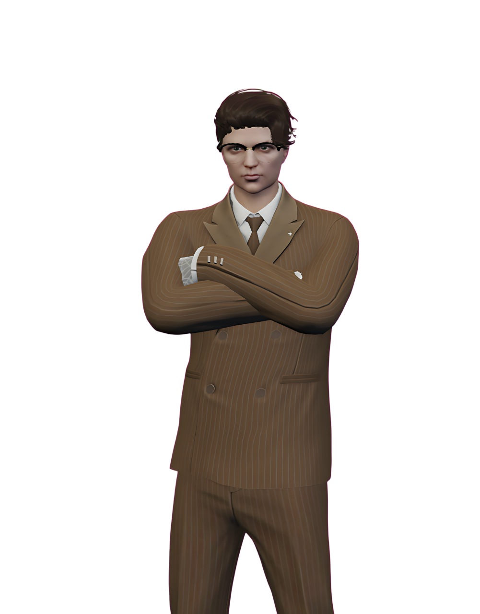
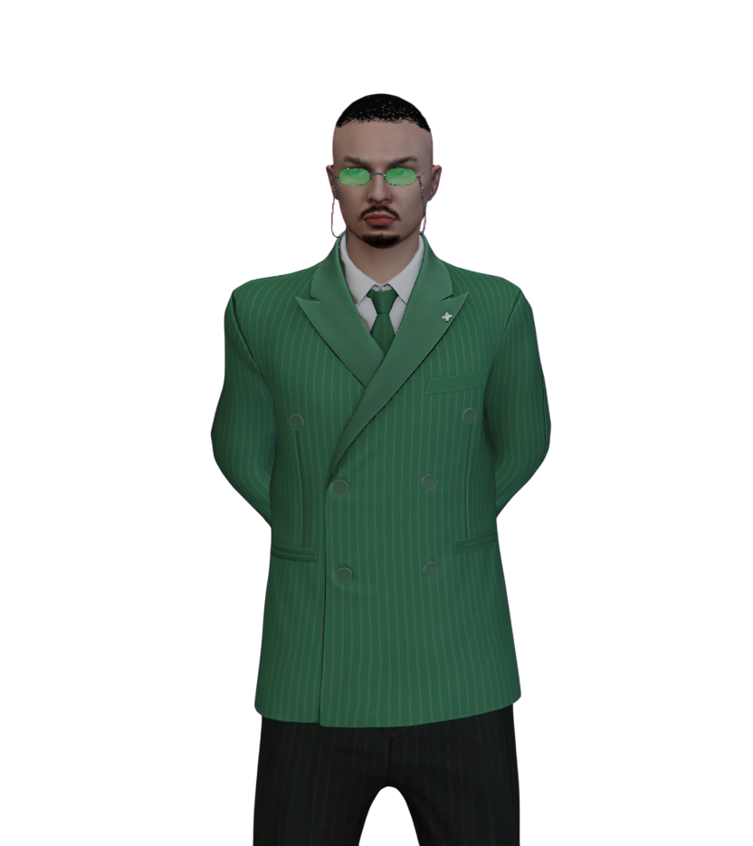
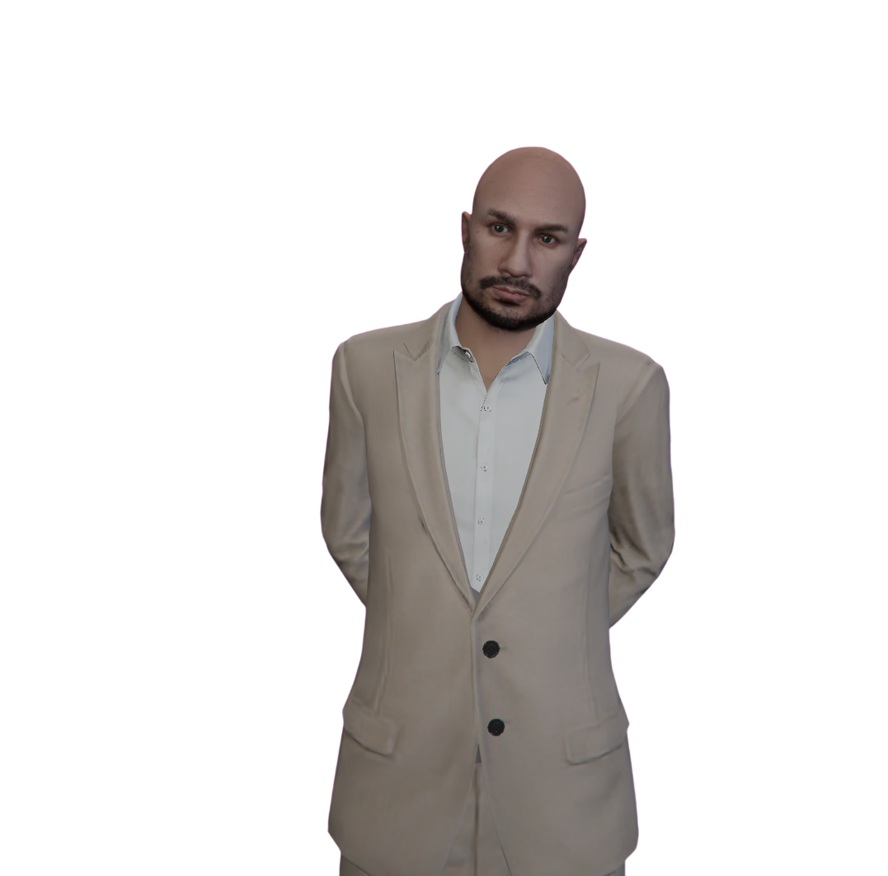
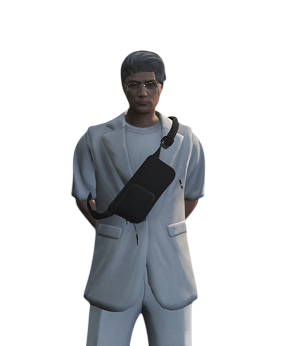

Калагин Сергей. Председатель партии. Координирует работу федерального совета, представляет партию на переговорах и в СМИ, отвечает за соблюдение устава и этических стандартов.

Высшее руководство Всероссийской политической партии «СВОБОДА» формирует стратегию, представляет партию в обществе и контролирует исполнение программных обязательств перед избирателями. Наведите курсор на карточку или выберите её клавишей Tab — появятся должность и краткая информация.
Калагин Сергей. Председатель партии. Координирует работу федерального совета, представляет партию на переговорах и в СМИ, отвечает за соблюдение устава и этических стандартов.

Крас Владислав. 1-ый Сопредседатель Партии. Курирует региональную сеть, взаимодействие с общественными организациями и подготовку избирательных кампаний.

Бошкатов Владимир. 2-ой Сопредседатель Партии. Организует заседания руководящих органов, ведёт документацию и обеспечивает информационную связь между уровнями партии.

Сухомлинов Виктор. Руководитель Аппарата Партии. Отвечает за кадровую политику, финансовую дисциплину и операционную поддержку проектов партии.

Белова Ирина. Председатель контрольной комиссии. Независимый надзор за соблюдением процедур, прозрачностью отчётности и этикой поведения членов партии.
Казанцев Сергей. Председатель молодёжного крыла. Развивает молодёжные инициативы, образовательные программы и участие молодых граждан в общественной жизни.